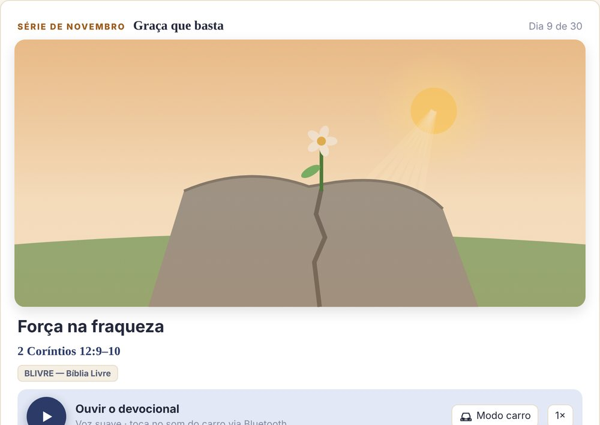

A Bíblia e a teologia reformada em um só lugar.
“A minha graça te basta.”2 Coríntios 12:9
O SOLA | Bíblia & Teologia reúne a Bíblia em várias versões, comentários de autores clássicos e brasileiros, concordância, devocional diário em áudio, credos e catecismos. Simples para quem está começando, profundo para quem estuda.
Funciona no iPhone, Android, Mac e Windows. Depois de instalado, abre como um app, com o farol do SOLA na tela inicial.
Tudo o que você precisa para estudar com profundidade
Pensado para a leitura diária, para o estudo em grupo e para a preparação de aulas e sermões.
Bíblia em várias versões
Leitura confortável, letras ajustáveis, grifos em cores e seleção de vários versículos para copiar ou compartilhar.
Comentários reformados
Calvino, Matthew Henry, Spurgeon e outros, além de autores brasileiros. Toque no versículo e o comentário abre ao lado do texto.
Concordância e busca
Encontre palavras e temas em toda a Bíblia, com o termo original em hebraico e grego quando disponível.
Devocional diário em áudio
Um devocional novo por dia, com séries mensais, ilustração da natureza e leitura em voz alta, inclusive no som do carro.
Credos e catecismos
Credo Apostólico, Niceno, Breve Catecismo de Westminster, Catecismo de Heidelberg e as grandes confissões, em português.
Pensadores reformados
Teólogos, filósofos e estudiosos que pensaram a cultura, a política e a psicologia a partir da fé reformada.
Notas e grifos
Anote o que aprendeu, salve devocionais e faça backup das suas anotações quando quiser.
Funciona sem internet
As Bíblias e conteúdos que você abrir ficam guardados no aparelho para ler mesmo off-line.
Privacidade de verdade
Sem cadastro obrigatório e sem anúncios. Suas notas ficam no seu aparelho. Leia a política.

Um texto novo a cada dia, uma série nova a cada mês
Cada devocional parte de uma passagem bíblica, conta a história por trás do texto e termina com uma reflexão e uma aplicação prática. Você pode ouvir no caminho do trabalho e enviar pelo WhatsApp com a imagem do dia.
- Um devocional diferente por dia, sem repetir no mês
- Séries mensais com tema e paleta de imagens próprios
- Ouça em voz alta, inclusive no som do carro
- Sugestões de louvor no Spotify ligadas ao tema
Instale em menos de um minuto
O SOLA é um aplicativo web: não ocupa espaço de loja e se atualiza sozinho. O farol aparece na sua tela inicial como qualquer outro app.
iPhone e iPad
- Abra o link no Safari.
- Toque em Compartilhar (quadrado com seta).
- Escolha Adicionar à Tela de Início.
Android
- Abra o link no Chrome.
- Toque em Instalar app no aviso que aparece, ou no menu ⋮.
- Confirme em Instalar.
Mac e Windows
- Abra no Chrome, Edge ou Safari.
- Clique no ícone de instalar na barra de endereço, ou em Arquivo › Adicionar ao Dock no Safari.
- O SOLA abre em janela própria.
Aponte a câmera do celular para o QR Code ou toque no botão para ver o passo a passo.
Abrir o guia de instalaçãoA Palavra de Deus, todos os dias.
Siga o Canal SOLA no WhatsApp e receba gratuitamente uma reflexão bíblica sempre que um novo devocional for publicado. Seu número não fica visível para ninguém.
Quero receber os devocionaisDúvidas comuns
O SOLA é gratuito mesmo?
Sim. O SOLA | Bíblia & Teologia é gratuito e não exibe anúncios. É um projeto de serviço à igreja.
Preciso criar conta?
Não. Você pode usar tudo sem cadastro. Se quiser, coloque seu nome e uma foto no perfil; esses dados ficam apenas no seu aparelho.
Qual é a linha teológica?
Protestante e reformada, em diálogo com os credos históricos da igreja e com as confissões da Reforma, como Westminster, Heidelberg e a Confissão Belga.
Funciona sem internet?
Sim. Depois de abrir uma Bíblia ou um conteúdo, ele fica salvo no aparelho. Algumas funções, como tradução automática de comentários e vídeos, precisam de conexão.
Vai estar na App Store e no Google Play?
Estamos preparando as versões para as lojas. Enquanto isso, a instalação pelo navegador oferece a mesma experiência e já recebe todas as atualizações.
Como envio uma sugestão?
Dentro do app, em Configurações › Sugestões, ou pelo nosso canal de sugestões.